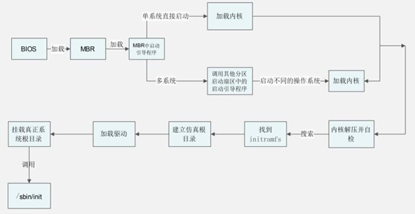

Linux内核（内核模块）的加载过程（超详细）
内核完成再次系统自检之后，开始采用动态的方式加载每个硬件的模块，这个动态模块大家可以想象成硬件的驱动（默认 Linux 硬件的驱动是不需要手工安装的，如果是重要的功能，则会直接编译到内核当中；如果是非重要的功能，比如硬件驱动会编译为模块，则在需要时由内核调用。不过，如果没有被内核硬件，要想驱动，就需要手工安装个硬件的硬块了。具体的安装方法会在后续章节中介绍）。
那么，Linux 的内核到底放在了哪里呢？当然是 /boot 的启动目录中了，我们来看看这个目录下的内容吧。
[root@localhost ~]#ls /boot/
config-2.6.32-279.el6.i686
#内核的配置文件，内核编译时选择的功能与模块
efi
#可扩展固件接口，为英特尔为全新PC固件的体系结构、接口和服务提出的建议标准
grub
#启动引导程GTUB的数据目录
initramfe-2.6.32-279.el6.i686.img
#虚拟文件系统（CentOS 6.x 中用initramfs替代了initrd,但功能是一样的）
lost+found
故boot分区的备份目录
symvers-2_6.32-279.el6.i686.gz
#模块符号信息
System.map-2.6.32-279.el6.i686
#内核功能和内存地址的对应列表
vmlinuz-2.6.32-279.el6.i686
#用于启动的Linux内核。这个文件是一个压缩的内核镜像
如果 Linux 安装在 IDE 硬盘之上，并且采用的是默认的 ext3/4 文件系统，那么内核启动后加载根分区和模块的加载都没有什么问题，系统会顺利启动。但是，如果 Linux 安装在 SCSI 硬盘之上，或者采用的是 LVM 文件系统，那么内核（内核载入内存是启动引导程序 GRUB 调用的，并不存在硬盘驱动不识别的问题）在加载根目录之前是需要加载 SCSI 硬盘或 LVM 文件系统的驱动的。
SCSI 硬盘和 LVM 文件系统的驱动都放在硬盘的 /lib/modules 目录中，既然内核没有办法识别 SCSI 硬盘或 LVM 文件系统，那怎么可能读取 /lib/modules 目录中的驱动呢？Linux 给出的解决办法是使用 initramfs 这个虚拟文件系统来处理这个问题。
initramfe虚拟文件系统
CentOS 6.x 中使用 initramfs 虚拟文件系统取代了 CentOS 5.x 中的 initrd RAM Disk。它们的作用类似，可以通过启动引导程序加载到内存中，然后会解压缩并在内存中仿真成一个根目录，并且这个仿真的文件系统能够提供一个可执行程序，通过该程序来加载启动过程中所需的内核模块，比如 USB、SATA. SCSI 硬盘的驱动和 LVM、RAID 文件系统的驱动。也就是说，通过 initramfs 虚拟文件系统在内存中模拟出一个根目录，然后在这个模拟根目录中加载 SCSI 等硬件的驱动，就可以加载真正的根目录了，之后才能调用 Linux 的第一个进程 /sbin/init。
Initramfs 虚拟文件系统主要有以下优点：
- initramfs 随着其中数据的増减自动増减容量。
- 在 initramfs 和页面缓存之间没有重复数据。
- initramfs 重复利用了 Linux caching 的代码，因此几乎没有増加内核尺寸，而 caching 的代码已经经过良好测试，所以 initramfs 的代码质量也有保证。
- 不需要额外的文件系统驱动。
其实大家只需要知道 initramfs 是为了在内核中建立一个模拟根目录，这个模拟根目录是为了可以调用 USB、SATA、SCSI、LVM、RAID 等硬盘接口或文件系统的驱动模块，加载了驱动模块后才可以加载真正的系统根目录。我们可以通过示意图 1 来表示这个过程。

图 1 内核启动流程
那么既然 initramfs 是一个仿真根目录，那么我们是否可以看看这个仿真根目录中到底是什么样子的呢？当然可以，命令如下：
[root@localhost ~]# mkdir /tmp/initramfs
#建立测试目录
[root@localhost ~]# cp/boot/
initramfs-2.6.32-279.el6.i686.img/tmp/initramfs/
#复制initramfs文件
[root@localhost ~]# cd /tmp/initramfs/
[root@localhost initramfs]# file
initramfs-2.6.32-279.el6.i686.img
initramfe-2.6.32-279.el6.i686.img:gzip compressed
data,from Unix,last modified:
Wed Apr 10 21:49:34 2013, max compression
#查看文件类型，发现这个文件是一个使用gzip命令打包的压缩包
[root@localhost initramfs]# mv initramfs-2.6.32-279.el6.i686.imginitramfs-2.6.32-279.el6.i686.img.gz
#修改文件的扩展名为.gz
[root@localhost initramfs]# gunzip
initramfs-2.6.32-279.el6.i686.img.gz
#解压缩
[root@localhost initramfs]# ls
initramfs-2.6.32-279.el6.i686.img
[root@localhost initramfs]# file
initramfs-2.6.32-279.el6.i686.img
initramfe-2.6.32-279.el6.i686.img: ASCII cpio archive (SVR4withnoCRC)
#查看文件类型，使用cpio命令的压缩文件
[root@localhost initramfs]# cpio -ivcdu <initramfs-2.6.32-279.el6.i686.img
#解压缩
[root@localhost initramfs]#ll
总用量34512
drwxr-xr-x. 2 root root 4096 4月 2412:10 bin
drwxr-xr-x. 2 root root 4096 4 月 24 12:10 cmdline
drwxr-xr-x. 3 root root 4096 4月 24 12:10 dev
-rw-r--r--. 1 root root 19 4 月 24 12:10 dracut-004-283.el6
drwxr-xr-x. 2 root root 4096 4 月 24 12:10 emergency
drwxr-xr-x. 7 root root 4096 4月 24 12:10 etc
-rwxr-xr-x. 1 root root 8962 4月 24 12:10 init
drwxr-xr-x. 2 root root 4096 4 月 24 12:10 initqueue
drwxr-xr-x. 2 root root 4096 4 月 24 12:10 initqueue-finished
drwxr-xr-x. 2 root root 4096 4 月 24 12:10 initqueue-settled
drwxr-xr-x. 2 root root 4096 4 月 24 12:10
initqueue-timeout
-rw-r--r--. 1 root root 35235328 4 月 24 12:09 initramfs-2.6.32-279.el6.i686.img
drwxr-xr-x. 9 root root 4096 4月 2412:10 lib
…省略部分输出…
#这就是initramfs虚拟文件系统中的内容，和根目录是不是很像
关注公众号「站长严长生」，在手机上阅读所有教程，随时随地都能学习。内含一款搜索神器，免费下载全网书籍和视频。

微信扫码关注公众号